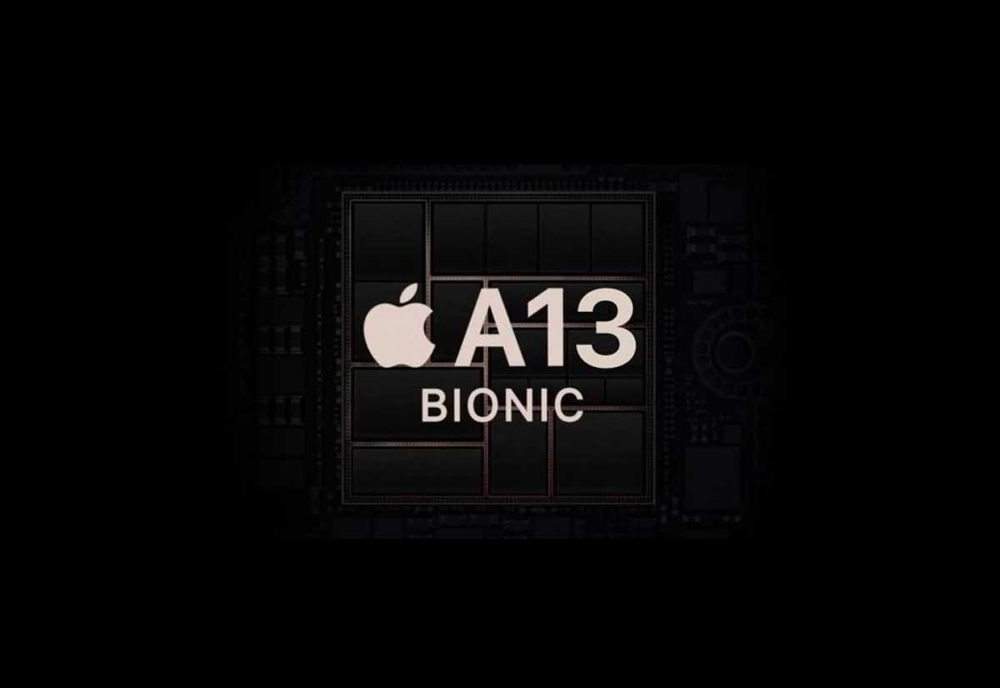

Процессоры Bionic - это линейка мощных и инновационных мобильных чипов, разработанных компанией Apple. Они применяются в смартфонах iPhone и других устройствах компании.
Процессоры Bionic отличаются высокой производительностью и эффективностью. Они оснащены мощными ядрами и графическими процессорами, что обеспечивает быстрое выполнение задач и плавную работу приложений.
Одной из главных особенностей процессоров Bionic является их интеграция с другими технологиями Apple, такими как Face ID и ARKit. Это позволяет устройствам на основе этих процессоров работать более эффективно и предоставлять пользователю новые возможности.
Кроме того, процессоры Bionic обладают высокой энергоэффективностью, что позволяет устройствам работать дольше без подзарядки.
В целом, процессоры Bionic являются мощными и инновационными продуктами, которые предлагают широкий спектр возможностей для пользователей устройств Apple. Они являются прекрасным выбором для тех, кто ищет надежный и эффективный процессор высокого класса
Немного истории
Процессоры Apple Bionic представляют собой высокопроизводительные чипы, которые были разработаны специально для использования в устройствах компании Apple. Они начали использоваться в 2017 году и с тех пор прошли несколько поколений, каждое из которых было более продвинутым и инновационным, чем предыдущее.
Например, первый процессор Apple Bionic, который был использован в iPhone X, был 6-ядерным чипом с двумя высокопроизводительными ядрами и четырьмя энергоэффективными ядрами. Это позволило устройству работать более эффективно и дольше на одном заряде батареи. Кроме того, этот чип содержал нейронные сети, которые обеспечивали более быструю обработку изображений и видео.
Следующее поколение процессоров Apple Bionic, которое было использовано в iPhone XS и XR, было еще более продвинутым. Эти чипы также содержали 6 ядер, но уже с более сложной архитектурой. Они также использовали 7-нанометровый техпроцесс, что позволило устройствам работать еще более эффективно и быстро.
Сегодняшние процессоры Apple Bionic, которые используются в iPhone 11 и новее, являются еще более продвинутыми. Они содержат до 8 ядер и используют нейронные сети для обработки информации. Кроме того, они поддерживают более быструю зарядку и обеспечивают более длительное время работы на одном заряде.
В целом, процессоры Apple Bionic продолжают развиваться и обеспечивать более эффективную работу устройств на их основе. Они являются ключевым элементом в создании высокопроизводительных и инновационных устройств компании Apple.